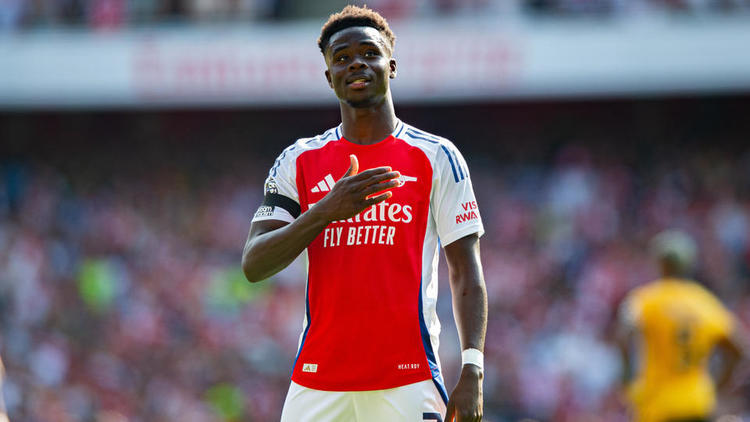

4 - 2
Data: 18 Maggio 2025
Stadio: Emirates Stadium, Londra
Competizione: Premier League - Giornata 37
Marcatori
- ⚽ Saka (11’)
- ⚽ Havertz (22’)
- ⚽ Ødegaard (33’)
- ⚽ Rice (65’)
- ⚽ Son (Tottenham, 70’)
- ⚽ Richarlison (Tottenham, 84’)
Analisi della partita
L’Arsenal domina il North London Derby con una prestazione scintillante, andando avanti 3-0 già nel primo tempo grazie a Saka, Havertz e Ødegaard. Nel secondo tempo, Rice segna il quarto gol prima della timida reazione del Tottenham con Son e Richarlison.
Ottimo lavoro del centrocampo dell’Arsenal, preciso e dinamico. In evidenza anche Saka sulla fascia destra, devastante nei duelli individuali. Con questa vittoria, l’Arsenal si avvicina sempre di più al titolo.
